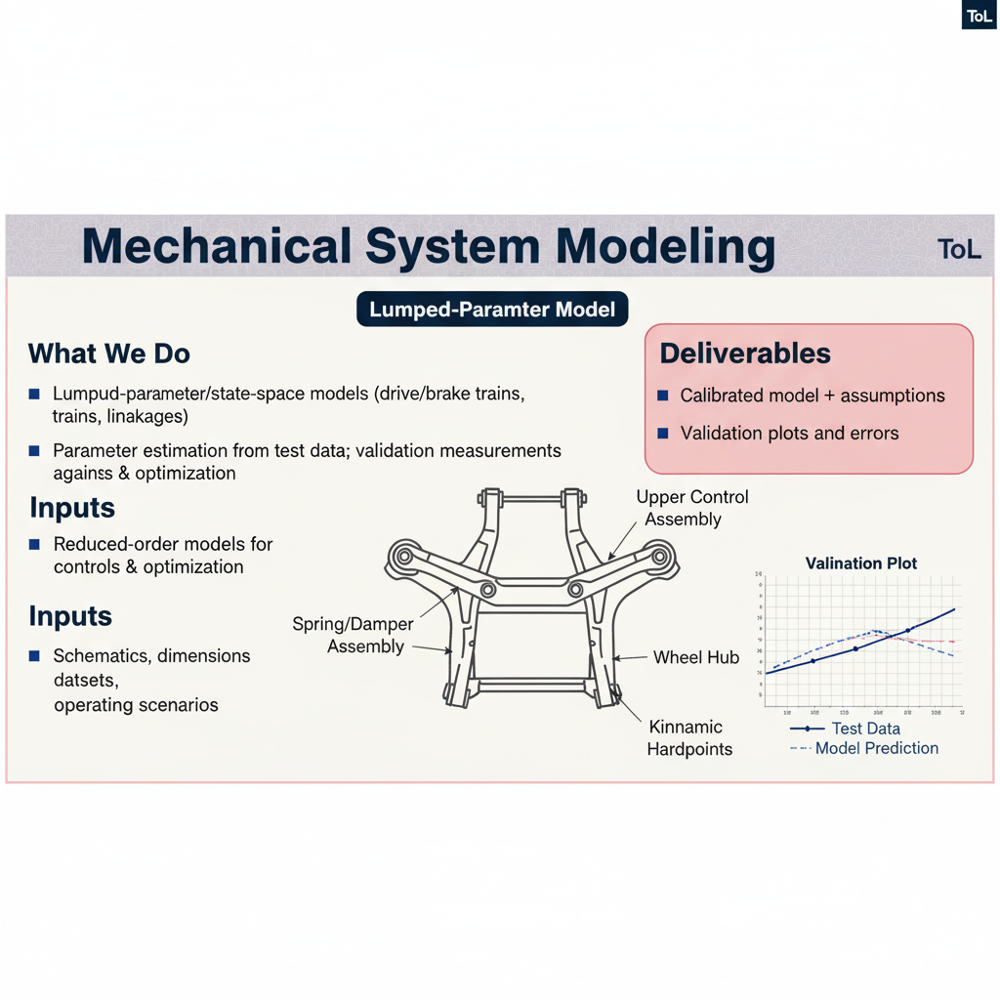

Led by Umut Tepe, Tepe Optimization Lab (ToL) is a specialized engineering consultancy focused on Computer-Aided Engineering (CAE) and multi-disciplinary optimization. We partner with clients to solve complex mechanical challenges, enhance product performance, and reduce development time.
Operating from Milan and Istanbul, we combine rigorous analytical methods with practical design insights to deliver clear, actionable results that drive innovation and efficiency.